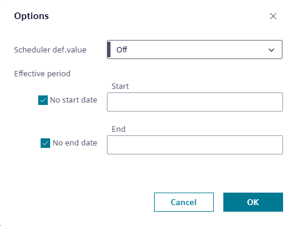

Modifying the schedule default
The schedule default is the value to which the schedule controls the referenced object when either of the following situation occurs:
- A switching point is not in control. This would happen on any day during the period of time before the first switching point is scheduled to occur.
- The value of a switching point is set to Return to default.
Use this procedure to modify the default value or setting for switching points that are added to the schedule.
- While in Edit mode, select Options in the heading.
- The Options dialog box displays the current Schedule default.

- Select the Scheduler def.value drop-down list to enter a new default value (analog object) or select a new default setting (binary or multistate object).
- If the schedule should not attempt to control the referenced object(s) when a switching point is not in control or when the value of a switching point is set to Return to default, select the Return to default checkbox (analog object) or the Return to default setting (binary and multistate object).
- Select OK to save your changes.